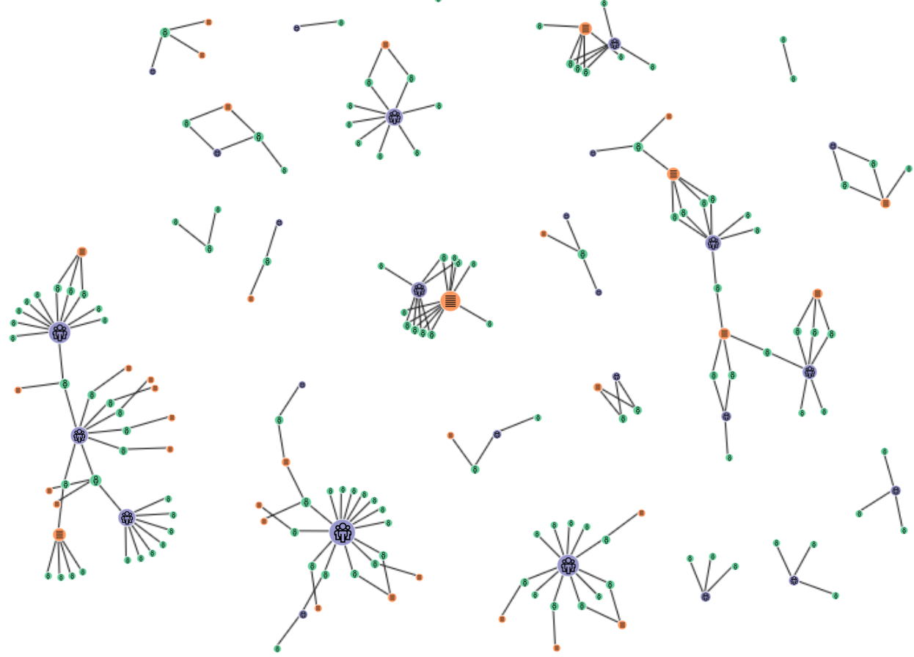

From the original site
This archived piece preserves its original text and historical context.
Catalhöyük Living Archive Network
Catalhöyük was the longest continuously occupied settlement in history. It has also been continuously occupied by archaeologists and support staff for the last 25 years. This network shows how those archaeologists and staff were connected to each other by shared group membership and shared document authorship.

What went right
The explanation of multimodal network projection is spot on. I think the actual network in its icons and filtering and on-the-fly network projection, is ground-breaking.
What went wrong
It's a complex system and it's hard to understand without someone there to explain it, which means it has serious failures from a UI perspective.
The next version would have
Better performance, much more finished look-and-feel, and the ability to see the network from the perspective of an individual or group.